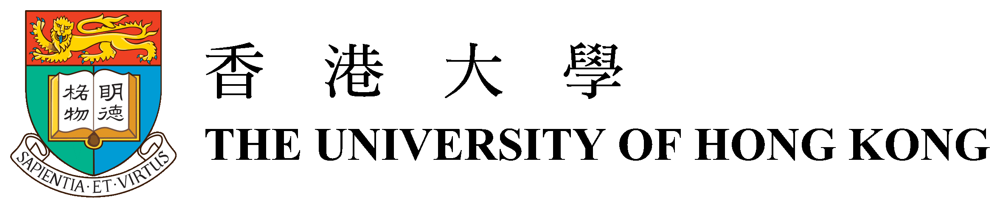
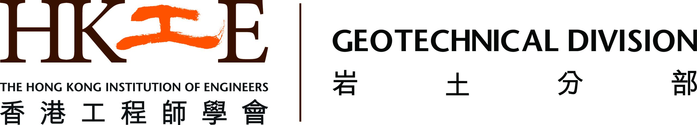

About the Workshop
In the context of climate change, extreme natural hazards, such as landslides, debris flows, and floods, are occurring with increasing frequency and intensity. Rapid urban expansion and socioeconomic development have significantly increased exposure to these hazards. To effectively reduce disaster risks, there is an urgent need for more efficient and integrated disaster management tools. Recent advances in Digital Twin (DT), Artificial Intelligence (AI), and Remote Sensing have opened new opportunities for improving natural hazard risk management.
The International Workshop on Digital Twin and AI Empowered Emergency Risk Management will bring together leading researchers, practitioners, and policymakers to explore how these advanced technologies can enhance resilience and decision-making, and to advance the technologies themselves.
CPD certificates will be issued to attendees per request.
Organized by

Supported by
